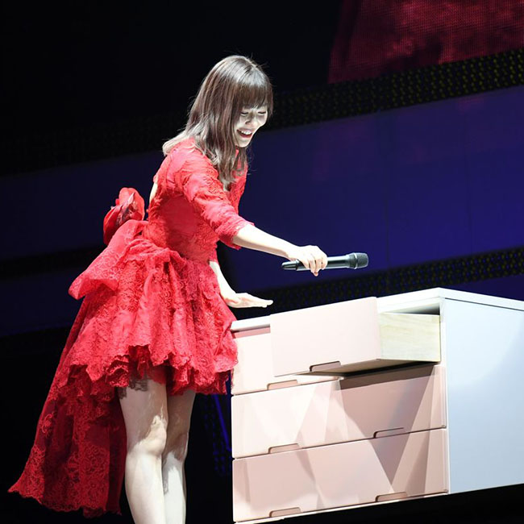
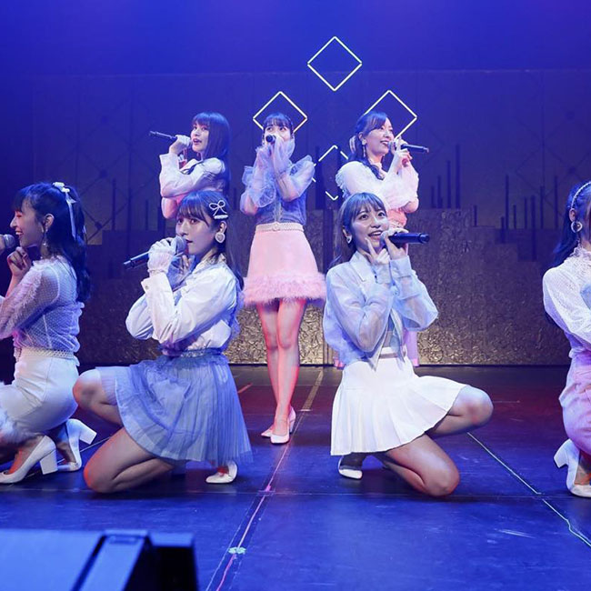

新闻
-

2019-10-29
HKT48的16名成员出演在家乡博多座上演的舞台剧《仁義なき戦い》
MORE11月9日より福岡?博多座で上演される「AKB48グループ特別公演」。第一部のお芝居、『仁義なき戦い～彼女(おんな)たちの死闘篇～』。国内のAKB48グループから47名ものメンバーが出演する「アイドル×仁義なき戦い」という前代未聞の話題作。地元福岡のHKT48からは、AKB48グループ最多の16名のメンバーが出演、そんな舞台に出演するメンバーに作品に対する意気込みを聞かせていただきました。
-

2019-10-27
新生HKT的“第一步”落幕，九州7县公演结束
MORE九州7県を巡るHKT48のコンサートツアー「あの支配人からの、卒業。」が27日夜、福岡市博多区の福岡サンパレスで終幕した。7月下旬から9会場18公演を通して結束を強めた54人のパフォーマンスでファンを魅了し、指原莉乃卒業後の「初めの一歩」を力強く踏み出した。また、11月26日に西鉄ホールで劇場デビュー8周年記念特別公演を開き、前日には博多座で前夜祭を行うことも発表した。
-

2019-10-02
HKT48 栗原紗英“今天的发型是自然的感觉，随风飘逸的头发。”
MOREHKT48チームTIIの栗原紗英さんが、9月28日に千葉・幕張メッセにて開催された日本最大級のファッション＆音楽イベント「Rakuten GirlsAward 2019 AU-TUMN/WINTER」に出演。
-
2019-05-28
指原莉乃福冈大感谢祭“从现在开始我离开HKT48了“
MORE4月28日に神奈川?横浜スタジアムで開催された卒業コンサート「指原莉乃卒業コンサート～さよなら、指原莉乃～」をもって卒業した指原莉乃が、約11年間の活動を支えたファンへ、感謝の気持ちを伝えるためにHKT48の地元?福岡にて、＜大感謝祭＞を開催した。